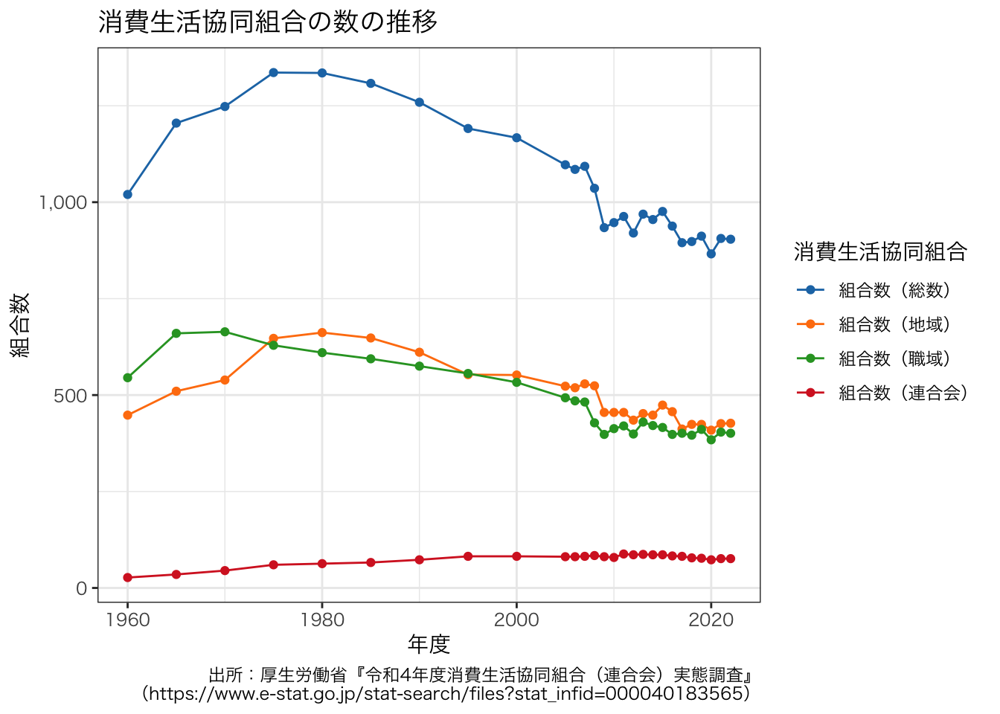

getwd()統計データを用いた作図（e-Stat編）
ここでは，農業協同組合数の推移の折れ線グラフを作成する。 日本の統計データの多くは，政府統計の総合窓口から取得可能である。 このサイトのことをe-Statと呼ぶ。 e-Statがどのようなサイトかは，『e-Stat』とは？などを読むとよい。
農業協同組合に関する統計データもe-Statから取得できる。 農業協同組合数の推移がわかる最新のデータは，次のページから取得できる。 実際に検索してみて，このページにたどり着けるか試してみよう。
[農業協同組合等現在数統計 確報 令和３年度農業協同組合等現在数統計 総括の部 1 農業協同組合、同連合会及び農事組合法人数の推移（第１表） 年度次
さて，ここからどのようにして折れ線グラフを描こうか。 上述のサイトからExcel形式でファイルをダウンロードできるので，ダウンロードしてみる。 r006-02-001.xlsという名前のファイル名で，ファイルがダウンロードされたはずである。 あとは，Microsoft Officeを構成するアプリケーションのひとつであるExcelを起動して，ファイルを開き，Excelの機能を使って折れ線グラフを作成することができる。 Excelの図で満足できる人はこれで終わりである。 ちまちまとマウスをクリックしながら，またセルを異動させながら，折れ線グラフを作成するとよい。 以下の説明は，Excelでは満足できない人のためのものである。
1 ExcelファイルをRで扱う
1.1 作業ディレクトリの変更
まず，Rを起動し，現在，パソコンのどこにいるのかを確認する。 「どこ」というのは，自分のパソコンのディレクトリ（フォルダとも呼ぶ）構成の「どこ」にいるのかという意味であり，Windowsなら”C:“から始まり，macOSなら”/“から始まる階層構造における位置のことである。 何も設定をしていなければ，Rの起動直後は，ホームディレクトリにいるはずである。 次のコマンドで，自分がどこにいるかを確認できる。
作業グディレクトリ（working directory）だからwdであり，それを得るという意味でgetを付けている。 通常，コマンドの意味は知る必要ないが，覚えるためには意味とコマンドの綴りを対応させなければならず，必然的に覚えざるを得ない。 作業グディレクトリを設定するには次のようにする。
setwd("~")“~”はホームディレクトリを意味する。 “~”を自分が作業したいところにすればよい。 よくわからないと思うので，最初は先ほどダウンロードしたExcelファイルをホームディレクトリに移動して，そこで作業するのも悪くない。 Excelファイルの移動は，Windowsならエクスプローラーを使い，macOSならファインダーを使えばよい。 この場合，作業ディレクトリは変更する必要がない。
1.2 Excelファイルの読み込み
実は，いきなりハードルが高い。 Excelファイルを読み込むのがハードルが高いのではなく，e-StatにあるExcelファイルのフォーマットが原因で，データを扱えるようにするまでが一苦労である。 本当なら試行錯誤が必要であるが，以下のとおり実行すれば問題なく読み込める（今回の場合，ヘッダーを読み込んでいない（諦めた。通常は読み込まなければならない））。
readxlを初めて使う場合のみ，以下のコマンドを実行する。 一度実行すれば，パソコンの電源を切ったとしても，再度実行する必要はない（実行してもエラーにはならないので，不安なら実行すればよい）。
install.packages("readxl")丁寧な説明はここまでとする。 Rに慣れていない人は，まずはコンマ区切り（CSV）またはタブ区切り（TSV）テキストファイルを読み込む練習から始めるべきである。 これらのファイルは，拡張子が.csvや.tsvとなっている。 また，Excelのようにセル結合等，見栄えを意識したデータではないため，初心者には非常にわかりやすい。 CSVファイルが読み込めるようになってから，以下を読み進めてほしい。
以下のコマンドでExcelファイルを読み込むことができる。
library(readxl)
df <- readxl::read_excel("r006-02-001.xls", col_names = FALSE, skip = 12)次に，読み込んだデータの前処理をする。 ここで何をやるかは，そのファイルがどうなっているかに依存する。 この作業を地道にやることにより，データ分析を見越して綺麗なファイルを作成しなければならないことに気づくはずである。 ここで，農林水産省を責めてはいけない。 それぞれの立場でそれぞれの事情があるのだろうと思いを馳せるだけである。 地味で辛い作業である。
# 前処理半作：データ分析は前処理が大事だという諺（嘘）
df_header1 <- c("", rep("単位農協", 4), rep("連合会", 3), rep("農事組合法人", 4))
df_header2 <- c("年次", "総合農協", "専門農協_出資組合", "専門農協_非出資組合", "合計", "出資連合会", "非出資連合会", "合計", "１号", "２号", "１号及び２号", "合計")
df_header <- paste(df_header1, df_header2, sep = "_")
df_header <- sub("^_", "", df_header)
df <- data.frame(df)
names(df) <- df_header
df <- df[1:76, ]
df <- df[-49, ]
df[, 1] <- 1:nrow(df) + 22 + 1925
dfcoop <- dfExcelファイルから読み込んだデータが分析可能な状態になっているかどうかを確認するためには，以下のコマンドを実行する。
head(dfcoop) 年次 単位農協_総合農協 単位農協_専門農協_出資組合
1 1948 NA NA
2 1949 15865 NA
3 1950 13314 3628
4 1951 13300 4060
5 1952 13100 4652
6 1953 13101 4955
単位農協_専門農協_非出資組合 単位農協_合計 連合会_出資連合会
1 NA 892 NA
2 14364 30229 NA
3 16159 33101 NA
4 16771 34131 NA
5 16691 34443 NA
6 16851 34907 NA
連合会_非出資連合会 連合会_合計 農事組合法人_１号 農事組合法人_２号
1 NA NA NA NA
2 NA 927 NA NA
3 NA 1121 NA NA
4 NA 1123 NA NA
5 NA 1149 NA NA
6 NA 1162 NA NA
農事組合法人_１号及び２号 農事組合法人_合計
1 NA NA
2 NA NA
3 NA NA
4 NA NA
5 NA NA
6 NA NAこのようになっていれば，作図や分析に使えるデータであるといえる。 なお，NAというのはNAという文字があるのではなく，そこには何もないという意味で理解するとよい。
1.3 折れ線グラフの作図
次に，折れ線グラフを作成してみる。
plot(dfcoop[, c("年次", "単位農協_総合農協")], type = "o", main = "総合農業協同組合数の推移", xlab = "年3月末", pch = 16, las = 1)
macOSの場合，文字化けする（トーフになる）かもしれない。 回避策はあるが，該当箇所を英語にするのが早い。 Rの操作方法に慣れてきたらこういうことに気を配ればよく，今のところ気にする必要はない（自分のせいではないと思うことが大事）。
とりあえず，~/.Rprofileやfontregisterer などを参考にするとよい。 よく分からない場合は文字化けしたまま進めばよい。
せっかくExcelファイルを読み込んだのに，総合農協の推移だけ示すのは味気ない。 そこで，専門農協のうちの出資組合と非出資組合も同じ図に表示してみる。
dfcoop2 <- dfcoop
rownames(dfcoop2) <- dfcoop2[, 1]
dfcoop2 <- dfcoop2[, -1]
matplot(dfcoop2[, c("単位農協_総合農協", "単位農協_専門農協_出資組合", "単位農協_専門農協_非出資組合")], type = "o", main = "単位農協数の推移", xlab = "年3月末", ylab = "農業協同組合数", lwd = 1, lty = 1, pch = 16, las = 1, axes = FALSE)
axis(1, at = 1:nrow(dfcoop2), labels = min(rownames(dfcoop2)):max(rownames(dfcoop2)))
axis(2, las = 1)
legend("topright", legend = c("総合農協", "専門農協_出資組合", "専門農協_非出資組合"), col = 1:3, lwd = 1, lty = 1, pch = 16)
それっぽいものができた。
プロットした図を保存したければ，次のようにする。
まず，出力先ディレクトリを指定する。 ただし，これは必須ではない。
outdir <- "./fig"あらかじめ図の描画先を指定することで，図をファイルに保存できる。 例えば，PDFファイルとして保存したい場合は，以下のように，pdfで保存先を指定した後，図を描画し，最後にdev.off()として描画先を閉じる。
pdf(file.path(outdir, "number_of_ja.pdf"), width = 10, height = 10)
matplot(dfcoop2[, c("単位農協_総合農協", "単位農協_専門農協_出資組合", "単位農協_専門農協_非出資組合")], type = "o", main = "単位農協数の推移", xlab = "年3月末", ylab = "農業協同組合数", lwd = 1, lty = 1, pch = 16, las = 1, axes = FALSE)
axis(1, at = 1:nrow(dfcoop2), labels = min(rownames(dfcoop2)):max(rownames(dfcoop2)))
axis(2, las = 1)
legend("topright", legend = c("総合農協", "専門農協_出資組合", "専門農協_非出資組合"), col = 1:3, lwd = 1, lty = 1, pch = 16)
dev.off()また，グラフを描いた直後に次のコマンドにより，保存する方法もある。
dev.copy(cairo_pdf, file = file.path(outdir, "number_of_ja2.pdf"))
dev.off()
dev.copy(png, file = file.path(outdir, "number_of_ja2.png"))
dev.off()dev.copy()とpdf()で出力されるPDFは同じではない。 結果を比較してみよう。 トラブルが少ない前者を推奨する。
実用的なファイルフォーマットは，ほぼPDFとPNGだけである。 Wordで使うことを考えると，WindowsではPNGで，macOSではPDFで保存すればよい。 ちなみに，保存は書き出しや出力と言い換えても，多くの場合，問題ない。
2 より高度な方法
e-StatからExcelファイルをダウンロードせずとも，APIを使ってデータを取得できることがある。 ややスッキリしない表現なのは，APIを使ってデータを取得できるものとできないものがあるためである。 幸いなことに，今回扱った農業協同組合数の推移のデータはAPIを使って取得できる。
以下の説明は高度であるため，スキップしてよい。 ただし，Rのスキルを身につけたい人は，時間をかけて構わないので，ぜひ挑戦してほしい。
2.1 e-StatのAPI取得
まず，e-Statのサイトでユーザ登録して，APIを取得する。 取得方法は自分で調べてほしい。
次に，keyring: Access the system credential store from Rを設定する。 これは必須ではないが，便利なので設定しておくとよい。
# 以下を実行する前に，e-StatのAPIを取得しておく
install.packages("keyring")
# library(keyring)
keyring::key_set("e-stat")
# 使う場合は，以下のようにする
# keyring::key_get("e-stat")2.2 e-Statからデータ取得
いよいよ本題に入る。 s-Statから欲しいデータを取得してみよう。
次のコードを実行することで，欲しいデータが取得できる。 statsDataId = “0002003131”の数字は，e-Statの農業協同組合等現在数統計 確報 令和３年度農業協同組合等現在数統計総括の部 1 農業協同組合、同連合会及び農事組合法人数の推移（第１表）のページを指すIDである。
library(httr)
response <- httr::GET(
url = "https://api.e-stat.go.jp/rest/2.1/app/getSimpleStatsData",
query = list(
appId = keyring::key_get("e-stat"),
statsDataId = "0002003131",
sectionHeaderFlg = 2
)
)
response <- httr::content(response)
df <- read.csv(text = sub("^.*\\\"VALUE\\\"\n", "", response), header = TRUE, check.names = FALSE)
df2 <- df
names(df2) <- gsub("\\(.+\\)", "", names(df2))
df2[, 4] <- factor(df2[, 4])
df2 <- tidyr::spread(df2, key = "農業協同組合等統括の部現在数", value = value)
dfMultifunctional <- na.omit(df2[, c("年次", "単位農協_総合農協")])
dfInvested <- na.omit(df2[, c("年次", "単位農協_専門農協_出資組合")])
dfNoninvested <- na.omit(df2[, c("年次", "単位農協_専門農協_非出資組合")])
dfcoop <- merge(merge(dfMultifunctional, dfInvested, by = "年次", all = TRUE), dfNoninvested, by = "年次", all = TRUE)
# 「年次」列に1996年3月末の行が，「1996年3月末(変更前)」と「1996年3月末(変更後)」の2つあるため，前者を削除する
rm1996 <- function (x) {
tmp <- x[x[, "年次"] != "1996年3月末(変更前)", ]
tmp[tmp[, "年次"] == "1996年3月末(変更後)", "年次"] <- "1996年3月末"
tmp
}
dfcoop <- rm1996(dfcoop)
dfcoop <- dfcoop[dfcoop[, "年次"] != "2022年4月1日", ]
dfcoop[, "年次"] <- as.double(gsub("年3月末", "", dfcoop[, "年次"]))
head(dfcoop) 年次 単位農協_総合農協 単位農協_専門農協_出資組合
1 1949 15865 NA
2 1950 13314 3628
3 1951 13300 4060
4 1952 13100 4652
5 1953 13101 4955
6 1954 13001 5462
単位農協_専門農協_非出資組合
1 14364
2 16159
3 16771
4 16691
5 16851
6 16905欲しかったデータが分析可能な形になったことが確認できる。 もう少し見栄えのよい表にしたければ，DT: A Wrapper of the JavaScript Library ‘DataTables’を使うとよい。
caption <- "農業協同組合数の推移"
DT::datatable(
dfcoop, caption = caption, rownames = TRUE,
extensions = 'Buttons',
options = list(
pageLength = 10,
dom = 'Blfrtip',
buttons = list(
c('csv', 'excel')
)
)
) |>
DT::formatCurrency(c(2:ncol(dfcoop)), currency = "", interval = 3, mark = ",", digits = 0)今回はDTを使うメリットがほとんどないが，複雑な表だと視認性が劇的に改善するため，覚えておくとよい。
2.3 ggplot2で折れ線グラフの作図
上記のデータフレームから折れ線グラフを作成する方法は，セクション 1.3 の方法と同じである。 以下では，授業で使用した図の作成方法を紹介する。
library(ggplot2)
dfcoop2 <- reshape2::melt(dfcoop, id.vars = "年次")
names(dfcoop2)[2:3] <- c("単位農協", "組合数")
levels(dfcoop2[, "単位農協"]) <- sub("単位農協_", "", levels(dfcoop2[, "単位農協"]))
g <- ggplot(data = dfcoop2) +
geom_line(aes(x = 年次, y = 組合数, group = 単位農協, colour = 単位農協)) +
geom_point(aes(x = 年次, y = 組合数, group = 単位農協, colour = 単位農協)) +
ggtitle("単位農協数の推移")
g + theme(text = element_text(family = "HiraKakuProN-W3"))
最後のところでエラーが出る場合は，gだけにして，プラス以降を入力しない。 文字化けするかもしれないが，気にする必要はない（文字化けを修正するのは大変）。
ggplot2は好き嫌いが分かれるグラフである。 個人的には，Rのコードが分かりやすく，短時間でいい感じのグラフに仕上がることから，ggplot2は非常に便利である（ただし，凝り過ぎには注意）と考えている。 少し工夫するだけで見栄えは劇的に改善する。
# 便利なカラーパレット
library(ggsci)
g <- ggplot(data = dfcoop2) +
geom_line(aes(x = 年次, y = 組合数, group = 単位農協, colour = 単位農協)) +
geom_point(aes(x = 年次, y = 組合数, group = 単位農協, colour = 単位農協)) +
scale_y_continuous(labels = scales::comma_format()) +
ggtitle("単位農協数の推移") +
theme_bw() +
# theme_minimal() +
# theme_classic() +
scale_color_d3()
g + theme(text = element_text(family = "HiraKakuProN-W3"))いい感じの図が描けた。
PDFファイルに保存するときは，以下のようにする。
ggsave(g, file = file.path(outdir, "number_of_ja_gg.pdf"), width = 8, height = 6)
ggsave(g, file = file.path(outdir, "number_of_ja_gg.png"), width = 8, height = 6)3 e-Statの検索
セクション 2 では，statsDataId = “0002003131”とIDを指定した。 しかし，通常はデータを探すところから始める必要がある。 以下に探し方の一例を示す。
library(httr)
library(listviewer)
library(rlist)
searchword <- "農業協同組合"
response <- httr::GET(
url = "https://api.e-stat.go.jp/rest/2.1/app/json/getStatsList",
query = list(
appId = keyring::key_get("e-stat"),
searchWord = searchword
)
) |>
httr::content()
listviewer::jsonedit(response)
df <- response$GET_STATS_LIST$DATALIST_INF$TABLE_INF |>
rlist::list.select(
id = `@id`,
stat_name = STAT_NAME$`$`,
gov_org = GOV_ORG$`$`,
statistics_name = STATISTICS_NAME,
# title = TITLE$`$`, # Error in TITLE$`$` : $ operator is invalid for atomic vectors
survey_date = SURVEY_DATE,
table_name = TITLE_SPEC$TABLE_NAME
) |>
rlist::list.stack()
head(df)ここで示した方法は，Rからe-Stat APIを使う - Qiitaが大変参考になった。 これ以外にも，e-Statからデータを取得する方法はある。 例えば，estatapiというパッケージを使ってもほぼ同じことができるはずである。 興味ある人は，自分で確かめてほしい。